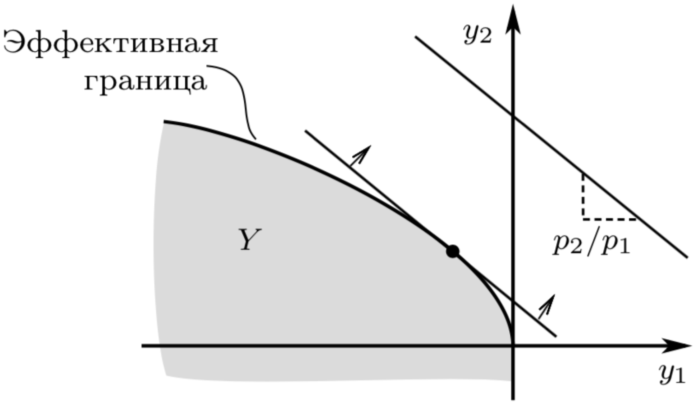

Пятая лекция, часть 2
Contents
Пятая лекция, часть 2¶
Технологические множества¶
В первой части мы фокусировались на минимизации издержек, однако, это накладывало определенные ограничения, поскольку описать технологию просто можно одним из двух способов: $\( x = G(\vec y), \quad F(\vec x) = y,\)$ то есть либо один фактор, либо один конечный товар. Нам хотелось бы описать более сложные технологии, в которых есть много факторов и много конечных товаров.
Оказывается, что удобнее всего отказаться от разделения между факторами и товарами и думать о них одинаково, а наша технология будет описывать как можно одни товары превращать в другие.
Пусть есть \(n\) товаров, которые можно произвести в количествах, описываемых точкой в \(\mathbb{R}^n\) (не в \(\mathbb{R}^n_+\)), поскольку какие-то товары окажутся факторами, потраченными при производстве других.
Одна технология это одна точка. Множество всех допустимых технологий это область в \(\mathbb{R}^n\), то есть технологическое множество. Эффективное производство (то, что раньше описывалось \(F\) или \(G\)) теперь описывается границей этого множества, то есть технологической границей, см. иллюстрацию ниже.
{kind=link}
Формально технологическая граница состоит из точек \(y \in Y\) таких, что не существует \(y' \in Y\), так что \(y_i' \geqslant y_i\) по всем координатам \(i\) и \(y_j' > y_j\) по хотя бы одной координате \(j\).
Lemma 4
Технологическая граница ищется как все точки \(z \in Y\) такие, что
для хотя бы одного вектора цен \(\vec q \geqslant 0, \vec q \neq 0\).
Аксиомы производителя¶
Фирма воспринимает технологическое множество и максимизирует прибыль:
Чтобы задача была выпуклой, нам понадобятся некоторые аксиомы.
Definition 48
Аксиомы технологического множества \(Y\):
A1: \(Y\) содержит \(\vec{0}\)
A2: свобода расходования
A3: невозрастающая отдача от масштаба:
A4: непусто, замкнуто
A5: отсутствие рога изобилия: \(Y \cap \mathbb{R}^n_{+} = \emptyset\).
Все эти аксиомы нужны, чтобы вывести из них свойства задачи максимизации полезности, которые нам хорошо известны наперед: непрерывность и выпуклость. Гладкость тоже желательна, но, на самом деле, можно обойтись выпуклостью \(Y\), поскольку выпуклые функции почти всюду дифференцируемы.
Theorem 11 (Без Доказательства)
Если выполнены аксиомы A1-A5, то технологическое множество выпукло. Более того, если производится один товар, то функция \(F\), описывающая технологическую границу, непрерывна и вогнута.
Максимизация полезности¶
В такой абстрактной постановке удобно анализировать задачу максимизации полезности:
Как обычно, нас интересуют два объекта:
координаты оптимума \(y^{\ast}(\vec q)\) - это функция предложения
значение целевой функции \(\pi^{\ast}(\vec q) = \pi(\vec q, y^{\ast}(\vec q)))\)
Поскольку тут происходит огибание в пространстве \(\vec q\), постарайтесь ответить на следующие два вопроса:
Вопрос: Чему равен градиент \(\pi^{\ast}(\vec q)\)?
Функции предложения.
Вопрос: Какова форма функции \(\pi^{\ast}(\vec q)\)?
Выпуклая.
Сложение технологических множеств¶
Предоложим, что у нас есть два завода. Первый обладает технологией \(Y_1\), второй обладает технологией \(Y_2\). Теперь представим себе, что компания владеет этими двумя заводами и может свободно перемещать товары с одного завода на другой и комбинировать любые технологические цепочки. Как описать технологическое множество \(Y_1 + Y_2\), соответствующее этой компании?
Definition 49
Для двух множества \(A\) и \(B\), их евклидова сумма \(A+B\) определяется как:
Действительно, компания может “сложить”, в векторном смысле, любые два вектора из множеств \(A, B\). Первый вектор \(a \in A\) означает, что партия товаров была произведена на первом заводе и была отправлена на склад. Второй вектор \(b \in B\) означает, что партия товаров была произведена на втором заводе и тоже отправлена на склад. На складе партии будут объеденены и суммарный обьем будет соответствовать вектору \(a + b\).
Lemma 5
Арифметическая сумма двух выпуклых множеств выпукла.
Доказательство.
Любая взвешенная сумма двух векторов из \(A+B\) представляется как сумма двух взвешенных пар векторов из \(A\) и \(B\), с теми же весами.
Соответственно, она тоже лежит в \(A + B\).
Сложение технологических границ¶
Предположим далее, что \(Y_1\) описывается производственной функцией \(F_1\), а \(Y_2\) описывается производственной функцией \(F_2\). Как будет выглядеть производственная функция для \(Y_1 + Y_2\)?
Какие есть кандидаты?
\(F_1 + F_2\)
\(\max(F_1 + F_2)\)
\(\nabla F_1 = \nabla F_2\)
Легко видеть, что производственная функция \(F\) множества \(Y_1 + Y_2\) определяется как верхняя огибающая семейства опорных функций: $\(F(x_1, \ldots, x_n) : = \max_{\hat x} \left(F_1(\hat x_1, \ldots, \hat x_n) + F_2(x_1 - \hat x_1, \ldots, x_n - \hat x_n)\right),\)$
то есть, мы сначала решаем сколько произвести на первом заводе, а потом производим остальное на втором заводе. Что нам говорит Теорема об Огибающей? Наклон огибающей равен наклону опорной функции в точке касания:
С другой стороны, можно сказать, что
то есть, мы сначала решаем сколько произвести на первом заводе, а потом производим остальное на втором заводе. И снова, Теорема об Огибающей:
Получается, что необходимым условием для того, чтобы точка лежала на границе объединенного технологического множества \(\vec y \in Y_1 + Y_2\) является то, что, при разложении \(\vec y = \vec y_1 + \vec y_2\) этой точки на вектор \(\vec y_1 \in Y_1\) и вектор \(\vec y_2 \in Y_2\):
С другой стороны, очевидно, что при разложении \(\vec y = \vec y_1 + \vec y_2\) этой точки, \(\vec y_1\) на границе \(Y_1\), а \(\vec y_2\) лежит на границе \(Y_2\).
Таким образом, для того, чтобы описать суммарную технологическую границу, надо сложить только те пары точек \(y_1 = F_1(\vec x_1)\) и \(y_2 \in F_2(\vec x_2)\), в которых наклоны равны, и сосчитать \((\vec x_1 + \vec x_2, y_1 + y_2)\).
Пример¶
Пусть технологии заданы производственными функциями:
Посмотрим, хватит ли нам уравнений, чтобы вычуслить суммарную производственную функцию.
Первым делом, разобьем \(k\),\(l\) на \(k_1+k_2\) и \(l_1+l_2\) соответственно. Тогда уже известно, что объем произведенного конечного товара будет равен:
Надо найти шесть уравнений, которые помогут нам исключить \(k_1, k_2, l_1, l_2, y_1, y_2\), оставив при этом \(k,l\). Я утверждаю, что это:
Это шесть уравнений и шесть неизвестных. В явном виде оно, к сожалению, не решается, но иногда просто полезно знать о том, что такая система есть.